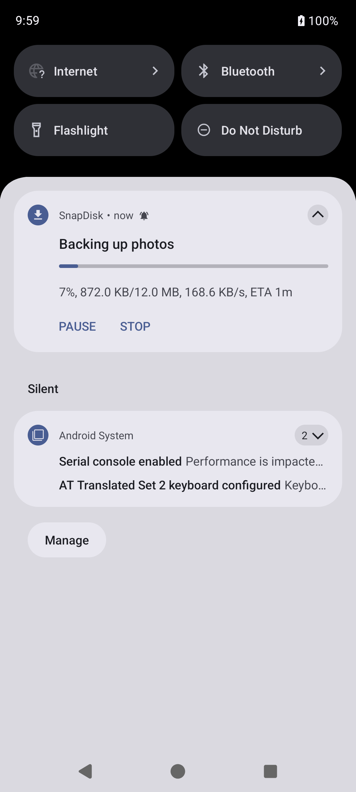

TL;DR: A photo you see in Seafile is not on your phone yet. Seafile is an open-source file sync and share platform: your photos live in libraries on a server — yours, your company's, or a hosted one — not in a folder on your phone, and the file appears only when you download it. In the Seafile app on Android, open the library, long-press the photo, and tap Download — that is the app's own download action, labelled Download, with a download icon — or select several photos and tap Download to save them together — and the file lands in a folder named Seafile, under the phone's Android/media folder, inside a folder for your account and a folder for the library. That is the one honest sentence in this whole job, and it carries two surprises: the folder is nested three deep — account, then library, then the file's own path inside the library — so the photo is not sitting loose in a folder called Seafile, and the folder can live on the SD card instead of internal storage if the card had more free space when the app first started. If the photo is already on the phone, there is nothing to download — the file is already in the Seafile folder, and the backup covers it directly. From wherever the file landed, the backup is the easy half: SnapDisk's default run reads Android's media index with no folder filter and copies the whole library — not DCIM only — so plug in the drive, tap Backup, and the downloaded Seafile photos copy along with everything else, no computer. The honest limits, up front: Seafile downloads nothing by itself — no auto-download, no setting that turns one on, and the app's automatic feature runs the other way, sending your phone photos up to the server, not bringing server photos down to your phone; downloading is not the same as opening a photo, and starring a photo writes nothing anywhere; a downloaded photo sorts by the day you downloaded it, not the day it was taken, because the file is written when you download it; and the Save as route — the menu's second download — can hand you a converted JPEG instead of the original, because it converts a HEIC motion photo before it saves it, so use Download for the original. The good news, and it is real: a Seafile download is the original file as stored on the server — the app writes the downloaded bytes as they arrive, with no re-encoding — so what you back up is the full file; and there is no transfer quota to hit on your own files, because Seafile is self-hosted and the limit is the server's disk and the phone's free space, not a meter. As of November 26, 2026, no top search result offers a dedicated Seafile-photos-to-USB how-to with no computer: the results are our own generic transfer article, our own storage-full and factory-reset articles, and generic guides that never mention Seafile — with no Seafile-specific phone-to-USB guide at all.
The confusion first: Seafile is a library on a server — and Download is not a copy in Downloads
Seafile sits in the middle of three confusions, and the whole job depends on clearing all three before you tap anything. The first confusion is the name of the thing you are looking at. Seafile is an open-source file syncing and collaboration platform: an account you sign in to, plus an Android app that talks to it — the app on Google Play is com.seafile.seadroid2, by Seafile, version 4.0.16, and the same app is on F-Droid and as a direct download — and that is exactly why it is confusing: it looks like a file manager, it behaves like a file manager when you open a photo in it, and it is not your file manager. It is a window onto libraries that live on a server, and the photos in them are files that live there, not on your phone. A file manager on your phone — the Files app — is a place where files live as files, organised by folder, and you can open them, copy them, and back them up. Seafile shows you files; it does not hold them as your files. The file manager can see Downloads, DCIM, Pictures, and every folder on internal storage; it cannot see inside your Seafile server. SnapDisk can only copy files the phone's media index holds or a folder you point it at contains; it cannot reach into Seafile either — the app has no INTERNET permission at all, which is a deliberate design choice, not a missing feature, and it means no cloud account of any kind is ever in scope for it. So the job is always two jobs: first get the files out of Seafile and onto the phone, then get them off the phone and onto the drive. The first job is a download. The second job is a copy. Guides that describe only one of the two are not wrong about the half they describe; they are useless for the job as a whole, because the half they skip is the half that stops you.
The second confusion is the one that decides whether the job works at all, and it is the confusion Seafile's own design invites. Seafile is where people keep their files because it is theirs — free and open-source software, with the whole Android app in the public haiwen/seadroid repository, a server you can run yourself, libraries you can share with a team, and no storage plan to buy for the space on your own disk — and the libraries feel like folders already: your files, your libraries, your shared links, all in the order you put them in, all yours, all reachable from any device. It feels like a backup already, and it is not one. It is a single copy on a server, under that server's rules. A photo with one copy is a photo at risk, and a photo whose only copy sits on a server you stop paying attention to is a photo at risk twice over. That is the whole argument for this article in one paragraph, and it is stated here rather than at the end, because the rest of the article is the answer to it: the server is convenient, the drive is yours, and a photo needs a second copy somewhere you hold. Download it, copy it, check it, and then — only then — delete the original from the phone if you need the space.
The third confusion hides inside Seafile itself, between the ways you can "save" something — and they are not the same thing at all. Downloading a photo copies it from your Seafile server to a folder on your phone that other apps can open — the Seafile folder under Android/media — and that is the tap this article is about. Opening a photo to look at it is thinner: the viewer fetches the file so it can show it, which does leave a copy in the Seafile folder — the viewer downloads to the same folder as the menu does — but opening is a look, not a save, and a photo you glanced at in a library you never downloaded is a photo you have to find again before you can copy it. Starring a photo is thinner still: it marks the file so you can find it in the Starred tab, and a star writes no file anywhere. Sharing a photo's link is a link, not a file, and a link depends on the file remaining available on the server. And Save as is a fourth thing, different again: it downloads the file first and then asks the system where to put it — which sounds like the same job, and is not, because on a HEIC motion photo it converts the file to JPEG before it saves it, so the file you get is not the file that was on the server. The only tap that writes the original file to a folder you can copy to a USB drive, unchanged, is the Download in the file menu — and if you have been starring photos and wondering why none of them are in the Gallery, this is why: you have been marking photos, and marked photos are not downloads.
Why does any of this need an article at all? Because the obvious thing — plug the drive into the phone and copy the photos — fails silently when the photos are still on the Seafile server. A USB drive plugged into an Android phone can only receive files that exist on the phone. The download is the step that moves the photo from a place the drive cannot reach into a place it can, and the download is a step you have to take yourself, because Seafile offers no download-them-all setting and no auto-download. The one thing that does not always survive is the date, and the date section below says so plainly, with the download-one-and-check rule, because for Seafile the date problem is a download problem: the file is written when you download it, and the day you downloaded it is the day it sorts by. And the one thing this article will not do, which the other guides do without saying so, is invent a folder: Seafile names its folder in its own code — a Seafile folder under Android/media, with your account and your library inside it — and the folder section below is a check, not a claim.
What the search results actually offer
Two phrasings, scored live this run, November 26, 2026. Phrasing 1, "save Seafile photos to USB drive from Android phone no computer" (supervisor, this run): only our own transfer-photos-to-usb-automatically article, our own storage-full article, a Facebook reel about moving photos to a USB stick that never mentions Seafile, a mefmobile guide about transferring photos from a phone to a USB stick that never mentions Seafile, and a pixoneye guide about transferring photos from a phone to a USB stick that never mentions Seafile — no Seafile-specific guide exists on this phrasing. Phrasing 2, "transfer Seafile photos to USB flash drive Android no computer" (supervisor, this run): our own generic transfer article, our own factory-reset article, a pixoneye guide about transferring photos from Android to a USB flash drive that never mentions Seafile, a Facebook reel, and a howtogeek guide about moving photos to a flash drive that never mentions Seafile — no Seafile-specific guide, and no guide that puts the download and the USB copy in the same place. No Seafile-to-phone-to-USB guide with no computer exists on either phrasing.
The pattern is worth naming, because it is the reason this article exists. The generic guides assume the photos are already local. The Seafile guides assume the job ends when the file reaches the phone, or they are about getting photos into Seafile — camera upload, sync, backup — with no USB step and no mention of where the file goes next. The job as stated — photos on Seafile, a phone, a USB drive, no computer — falls through all three assumptions at once, and the gap is narrow but real: it stands only on that joined route, Seafile to phone to USB, with the download step stated, the folder named, the no-auto-download wall stated, the Download-versus-star-versus-viewing untangling stated, the folder batch route stated, and the date limit stated plainly. Our own site has no dedicated article either: there are zero "seafile-photos-to-usb" slugs in the feed, the sitemap, the blog index, llms.txt, llms-full.txt, searches.md, or the work log before this article — the only "Seafile" mentions anywhere are none at all, not even incidental ones — never scored, never killed. The nearest articles are the other cloud articles — Google Drive, Dropbox, OneDrive, iCloud, Amazon Photos, MEGA, pCloud, Nextcloud, Immich, Ente — and the other social-app articles — WhatsApp, Telegram, Messenger, Viber, Kik, WeChat, IMO, Pinterest, Reddit, Instagram, Facebook, Snapchat, TikTok, X, Tumblr, Flickr, SmugMug — all different apps, all linked as series companions below. This is the 214th how-to, and it is the first one about Seafile.
It is also worth saying what the gap is not. It is not that nobody has written about downloading files from Seafile — the app has a Download action, and the project's own code documents it. It is not that nobody has written about copying photos to USB from a phone — the pixoneye guide and a dozen others have. The gap is the join: nobody puts the Seafile download and the USB copy in the same guide, on the phone, with the folder named, the offline trap named, the quota question answered, and the Download-versus-Save-as distinction named. A guide that stops at the phone leaves you with files somewhere in shared storage and no next step. A guide that starts at the phone leaves you staring at a Seafile server that shows photos you cannot copy. A guide that routes through a transfer app leaves you with a phone-to-phone copy and no drive. This article is the join.
The wall: Seafile downloads nothing by itself — the download is yours to do
Seafile does not put your server photos in your Gallery on its own. That is the first fact, and it is the one that decides the whole route. There is no auto-download, no setting that turns one on, and no folder that fills up by itself as you scroll. Every description of the download describes a manual step — open the library, long-press the photo, tap Download — because the manual step is the only step there is. Seafile's own manual covers the server, not the Android tap-flow — the download is verified here from the app's own code for version 4.0.16, the latest release, not from the manual, and this article says so instead of pretending the manual covers it. Seafile's settings hold nothing about downloading to the phone automatically: the app has a camera upload toggle, which sends your phone photos up to the server, and no auto-download toggle, and no sync-to-device option. A starred photo sits in the Starred tab, which is a list of markers, not a folder: it is Seafile's own view, invisible to the file manager, invisible to SnapDisk, and gone when the star is removed. A photo becomes a file on your phone only when you download it, and you download it one photo at a time — or one selection at a time, with the multi-select described below, or one folder at a time, with the folder download described in Method 2.
The download itself is a real, built-in step, and it is worth stating exactly, because the app's own code states it in the same words this article uses. Open the Seafile app. Open the library — the library is the unit Seafile organises by, and the photo lives inside one — and find the photo. Long-press it: a bottom sheet opens with the file's actions, and one of them is Download. That is the app's own download action: a download icon, the label Download, offered for files in the library. The label is the word Download in the app's own English strings, and the tap queues the file for download — the code takes the selected files, works out each one's place on the phone, and hands them to the download worker, which writes the file to the Seafile folder. If the photo is already on the phone — downloaded before, original still in the folder — the tap downloads it again and replaces the local copy, because the download strategy is replace, not skip: there is no second copy piling up under a new name, and no stale copy left behind either. That is not a missing button. It is the app doing the same job twice, and the file on the phone is the fresh one. For a photo that is server-only, the tap downloads the file as stored on the server and saves it to the Seafile folder, under your account folder and the library folder. The same action works from a selection: long-press one photo, tap the others to build a selection, and use Download in the action menu to save them together. In some app versions the same step may be reached from the photo's own viewer — opening a photo downloads it to the same folder so the viewer can show it — but the menu Download is the step to learn, because it is the one you can do on purpose, for the photos you choose.
There is one more thing the download does not let you choose, and it is worth knowing before you download a hundred photos, because it decides where the files land. Seafile names its destination in its own code, and the destination is nested: the app's media folder is a Seafile folder under the phone's Android/media folder, and inside it sits a folder for your account — your email and your server, like you@example.com (cloud.seafile.com) — and inside that sits a folder for the library — its name plus the first four characters of its id, like Photos_ab12 — and inside that sits the file, at the same path it has inside the library. The folder is the one named thing in this whole job, and it is named by Seafile's own code, not by Android's default: the download target is the media folder plus the account folder plus the library folder plus the file's path, and the folder-check section below walks the whole search in order. Do not waste an evening looking for the download in the Downloads folder. A Download in Seafile does not go to Downloads. The web download does that, and the web is a different route, covered below. And do not look for the photo sitting loose in a folder called Seafile, either: it is three folders down, and the account and library folders are the ones that tell you you are in the right place.
One more detail, on permission, because it is the reason the download sometimes silently does nothing. The Seafile app needs storage permission to write to the Seafile folder, and on current Android versions that permission is the one the system asks for when the app first tries to save. If you denied it once, the download tap may show nothing at all — and the photo is not in the folder, because there was nowhere to write it. The check is the folder, not the tap: after the first download, open a file manager and look in the Seafile folder for the photo. If the photo is there, the permission is fine and every download after it works the same way. If it is not there, grant the permission in Settings, Apps, Seafile, Permissions, and download the photo again. Do not download fifty photos and check at the end. Download one, check the folder, then download the rest.
What you need. Five things, none of them exotic. An Android phone with the Seafile app installed and signed in — the sign-in that matters is your Seafile account, because the photos live in that account's libraries, on the server you signed in to. The server itself, reachable from the phone — on any connection, Wi-Fi or mobile data, because Seafile is a server you reach over the network, not a folder on your home network; without a reachable server there is nothing to download, and a photo that does not load cannot be downloaded, which is a confusing way to discover the server is down. The app itself is free to install, on Google Play and on F-Droid, and current — version 4.0.16, released November 13, 2026 — so update it before you start, because the menu wording varies between app versions. Enough free space on the phone to hold the downloads: the photos have to land on the phone before they can be copied to the drive, so if the phone is nearly full, download in batches and copy each batch to the drive before downloading the next. A USB drive the phone can read and write — USB-C straight in, or USB-A through an OTG adapter that carries data, not just power; a charging-only adapter will power the drive and transfer nothing. And the drive formatted in a filesystem the phone can write: exFAT is the safe choice, because FAT32 cannot hold a single file of 4 GB or more, and SnapDisk skips such a file with its reason instead of failing the whole backup.
Check the drive before you start, not after the first batch fails. Plug it in, open Files by Google, and look under Storage devices: if the drive appears, the phone sees it. Copy one small photo to it by hand — select, Copy to, choose the drive — and open it from the drive to confirm it reads back. That one-minute check rules out the three most common hardware failures at once: a charge-only adapter, a drive the phone cannot mount, and a drive formatted in a filesystem the phone cannot write. The rest of this article assumes the drive works, because the download steps are the same either way, and a broken drive deserves its own diagnosis, not a footnote in a download guide.
One more check, on the Seafile side: open the photo and confirm it is actually there, and that it is a photo you can download. If the photo is in a library you can open, it is a photo you can try to download. If it is from a link that expired, or the file was deleted, or it sits in a shared library you were removed from, it may not load at all — and a photo that does not load cannot be downloaded. And if the Download option is missing entirely, that is usually one of two things, not a bug: the photo is already on the device and the tap would only replace it, or the photo is shared with you in a way that does not include downloading — one Play review also reports that Download does not appear from the Starred tab, so download from the library view, not from Starred. Do not download first and diagnose later: open the photo full-screen first, wait for it to load crisp, and then open the menu. A download of a half-loaded thumbnail is a download of a half-loaded thumbnail.
Method 1: Download one photo in the app, then back it up with SnapDisk
This is the core route, and it is short enough to do from memory once you have done it once. Open the Seafile app on your Android phone and sign in to your account. Open the library the photo lives in — libraries are the units Seafile organises by, and the photo lives inside one — and find the photo. Wait for it to load crisp first: a photo that is still loading is a thumbnail, and a download of a thumbnail is a download of a thumbnail. Long-press the photo: a bottom sheet opens with the file's actions. Tap Download. If you want more than one, long-press a photo to select it, then tap the others to build a selection, and use Download in the action menu to save them together — the same download action serves the selection as well as the single photo. Then find the file — and finding it is a short step, because Seafile names the folder. Open a file manager and go to Internal storage, Android, media, com.seafile.seadroid2, Seafile — and inside it, your account folder, then the library folder, then the file at its path inside the library. If the folder is not there, check the SD card first: on first start the app picks the storage with the most free space, so on a phone with a large SD card the Seafile folder may live on the card instead — and the folder-check section below walks the search in order, with the reason each place is worth checking.
That confirmation matters more than it sounds, because the folder the file landed in is where the whole second half of the job starts. A photo the file manager shows in the Seafile folder is a real file in shared storage, and everything downstream — the gallery, the file manager, SnapDisk — reads from shared storage. You do not need to move the photo out of the Seafile folder, rename it, or put it in DCIM/Camera. Leave it where Seafile put it. The default run, described in the section after next, reads the media index with no folder filter, and the Seafile folder is scanned into that index like any other folder — it sits outside DCIM, under Android/media, and the index does not care. Moving the file is an extra step that can only go wrong: a move that is interrupted leaves the file in neither place, and a rename breaks the link between the file on the drive and the photo in Seafile if you ever need to match them up again.
Once the photo is a file on the phone, the backup is one tap. Plug in the USB drive. SnapDisk shows a notification offering Backup — tap it, and the run starts. The app copies oldest-first, in the background, with a progress notification that shows the percentage, the gigabytes copied against the total, the speed, and the time left, and Pause and Stop on the notification itself. You do not pick the photo, the folder, or the file: the default run copies the whole library, and the downloaded Seafile photo copies along with everything else. The free version caps each run at 5 GB; if the downloaded batch is bigger than that, run it again past the cap and it picks up where it stopped, because files already copied are never copied twice. Pro is a one-time $9.99 purchase for auto-backup when a disk is connected and unlimited backup size. When the run finishes, open the drive in the Files app and check a few photos on the drive itself — open them from the drive, not from the phone — before you delete anything from the phone. SnapDisk copies, it never deletes: deleting the originals afterwards is your step, only after verifying the copy.

A note on scale, because it decides whether this method is the right one. Method 1 is one photo — or one selection — at a time, and it is the right method for a handful of photos — the ten you actually want, the photos from one folder, the photos from one trip. It is the wrong method for a thousand photos, because a thousand tap-and-download taps is an evening of tapping, and an evening of tapping is a job that will not get done. For a whole folder, use the folder download in Method 2, which gets the folder in one step instead of one tap at a time. For a whole library, use Method 3, which works through the folders one by one instead of one selection at a time. For someone else's photos there is no bulk route beyond what was shared — Seafile offers none, and this article says so instead of sending you to a downloader. The phone route is for the photos you actually want, not for the archive you might want one day.
If the Download option does not appear, work through the fixes in order. First, check whether the photo is already on the device: open the file manager and look in the Seafile folder before anything else — it may already be a file, and the job may already be half done, because the Download button downloads the file whether or not a copy is already there, and a second tap only replaces it. Second, check that you are logged in to the right account, on the right server: the photos live in the libraries of the account you signed in with, and a second Seafile account — or the same account on a different server — holds a different library list. Third, update the Seafile app: the menu wording varies between app versions — Download in current versions — and an old build is the likeliest reason a button you expect is not there. Fourth, try the selection route instead of the single-photo route: long-press the photo in the library, select the photos, and download the selection — the same action serves both menus — and download from the library view, not from the Starred tab, where one Play review reports Download does not appear. Fifth, open the photo on the web instead of the app: sign in to your Seafile server in the browser, open the photo, and download it from there, and the file arrives in the browser's Downloads folder. Sixth, check the permission: Settings, Apps, Seafile, Permissions — grant it, and download again. One of those six fixes the download in almost every case where a fix exists, and the check is always the same: the photo in the Seafile folder, before you download the next one.
There is also a manual route that needs no app at all, and it is worth keeping in the article because it is the fallback when everything else fails. Plug in the drive, open Files by Google, go to the folder the download landed in — the Seafile folder, or Downloads if you used the web — select the photos, tap Copy to, choose the drive, and tap Copy here. It works, and it works for any file. The manual route has no progress detail, no resume if you unplug mid-copy, and no verification that every file actually arrived, and you have to repeat the whole selection next time photos pile up. That is the honest contrast: the manual copy is the route that always works, and SnapDisk is the route that works without the repetition. Use the manual copy to check the drive works; use SnapDisk for the backup itself.
Method 2: A whole folder — download it in the app, or pull it on the web
Seafile is blunt about the one bulk step the app does offer, and it is worth stating plainly, because it is the step every other cloud in this series offers in some form and Seafile offers in its own: the app downloads a folder, and a folder download is one step on the folder itself. Long-press a folder in the library to select it, open the action menu, and tap Download. Each photo inside it downloads as its own file to the Seafile folder, at the same path it has inside the library — the code fetches the folder's contents recursively and queues every file, so a folder of a hundred photos is a hundred downloads started by one tap — and the wait is the download, not the tap — use the batch-size advice below, and check the folder before you start the backup, because the backup can only copy files that are already on the phone.
For a batch on the web, the route is the browser, and it is worth following exactly, because the web route has one trap — the Downloads folder — that decides whether it works on a phone at all. Sign in to your Seafile server in the browser, open the library, and download the file — or the whole folder, which arrives as a ZIP archive. One photo arrives as its own file, under its own file name; a folder arrives as a single ZIP to the browser's Downloads folder. That is the trap, and it is a real one: the web download lands in Downloads, not in the Seafile folder and not in DCIM, and a reader who looks for the batch in the Seafile folder will not find it until the ZIP is opened — open the ZIP once, which puts the photos in a folder of their own, and back that folder up, or use the From picker route, which reads the folder directly and does not depend on the index at all. And a shared library or link works from the web too: the web download applies to shared files as well as your own, so a photo someone shared with you downloads the same way — but check each item, because sharing is per library and per link, and a file shared with you for viewing is not automatically a file you can download: check what the share allows before assuming the selection is yours to take.
The web route is also the route for the photos the app will not download, and it is worth one paragraph, because it is the route for the edge cases. If a photo is in a library someone shared with you, the web view shows the same library, and the same Download works from there — but check each item, because sharing is per library and per link, and a file shared with you for viewing is not automatically a file you can download: check what the share allows before assuming the selection is yours to take. If a photo is in a shared link someone sent you, the same rule holds: the link shows you the file, and the download is a separate permission the owner controls. And if the Download option is missing for a single photo in the app but present on the web, the web is the fix — the app and the web do not always agree on what is already on the device, and the web download writes a fresh file either way.
The limits are worth stating plainly, because they decide whether the batch route is the route for your job. The download is the photos you selected, not the library as an object: the library name, the folder order, and the library membership do not travel with the files, so keep the library context yourself — a dated folder on the drive, named for the Seafile library, is the simplest way, and the checking section below says so again, because it is the step people skip. Each time more photos are added to the folder, you need to download again, or the new photos will not be in the batch. And there is no quota wall to size the batch against: Seafile publishes no download quota on your own files — the files live on your server, and the only meter in sight is the server's disk and the phone's free space — so the limit is the phone's free space and your patience, not a meter. For ten photos, download them in the app. For a whole folder, download the folder in the app, or use the web download and unzip the ZIP. Use each route for the job it fits, and check the Seafile folder — or the Downloads folder for a web batch — before you start the backup, because the backup can only copy files that are already on the phone.
Method 3: Your whole library — what Seafile does and does not export
For a whole library, the honest answer is that Seafile has no one-tap whole-library export in the app, and this article says so instead of inventing one. There is no settings page that zips your entire library, no download-all button that compiles everything you ever uploaded, and no archive that arrives by email with all your libraries in it. The export unit in the app is the photo, the selection, or the folder: one photo at a time, one selection at a time, or one folder at a time. If you have ten folders, that is ten downloads. If you have a hundred, that is a hundred — and that is the truth, not a reason to hand your account to a scraper.
The route that does exist for a whole library is the folder-by-folder download, and it is worth doing in order, because the order is what keeps it from becoming a mess. Start with the folders that matter most — the photos with no other copy anywhere — and work down the list. For each folder, download it in the app, or download it on the web and unzip the ZIP, and back up the files it contains before downloading the next folder. Keep each folder's files in their own dated folder on the drive, so the drive ends up with the folders in the order you chose, even if the dates inside them are download dates. It is slower than a single export would be, and it is the route that exists. The app's folder download is the faster route for a single folder, and the web download is the route for the folders the app will not take. Use each one for the job it fits.
For the whole library at once, the route that exists is not on the phone at all, and the boundary is worth stating because it is specific to Seafile in a way it is not for the other clouds in this series. Seafile's own whole-library route lives on the computer: the desktop sync client keeps chosen libraries mirrored in a folder on the computer — the files are there, in ordinary folders, and the drive copy is a file copy — or SeaDrive shows the libraries as a virtual drive and fetches files on demand, so only the files you open are downloaded. That is the honest boundary of this article — it is the computer route, and this article is the no-computer phone route, so it names the boundary instead of pretending the phone can do the same job. If you have a computer handy, the desktop sync client is the faster route for a whole library by a long way, and the phone route is the one for the photos you actually want right now. Do not leave the job until the server goes away: the time to take the photos out is while the server is running, not after it stops answering.
Two facts about the library downloads are worth stating because they decide who they work for. First, they are for photos you can download: your own photos, and other people's photos where the sharing allows it. They do not provide an export for someone else's library, and they do not include photos you viewed but did not download — a library of views is not a library you can export. Second, the download is not locked to you: a file you download is a file, and a file can be copied, shared, and forwarded by anyone who holds it, so keep the drive somewhere safe and do not forward a batch in a group chat and assume only the people you meant will open it. If the photos need protection, the protection is the drive in your drawer, not the server on the service.
And the wall, stated once, plainly: for someone else's photos there is no bulk route beyond what was shared. Seafile offers no export for a library you do not control, no download-a-whole-library button, and no save-them-all in the app beyond a single photo, a selection, or a folder. The third-party downloaders exist — tools and apps that take an account or a library link and fetch the files — and this article does not use them, does not link them, and does not recommend them, because the app's own Download does the job they claim to do, and a tool that asks for your Seafile password to download a shared folder is asking for something it does not need. If the photos are on someone else's server, the honest routes are the ones in this article: download the photos you actually want one by one, or the whole folder where the sharing allows it, or ask the person for the files. A thousand one-by-one downloads is an evening of tapping that will not get done — and that is the truth, not a reason to hand your account to a scraper.
Does SnapDisk's default run cover a downloaded Seafile photo?
Yes — with one condition, and the condition is the whole point of this section. SnapDisk's default run reads Android's media index with no folder filter, so a downloaded photo copies with the rest of the library, whatever folder Seafile put it in — the Seafile folder, Downloads, or any other shared folder. The code is short enough to quote in full, and this article quotes it rather than paraphrasing it, because the claim is only as strong as the code behind it. The default run calls queryMediaStoreOldestFirst, in app/src/main/java/dev/dzianisv/snapdisk/backup/PhotoQuery.kt:23-36, which queries two tables — MediaStore.Images and MediaStore.Video, the external-content URIs — and merges the results, then sorts them oldest-first. The query itself passes no selection at all: the contentResolver.query call at app/src/main/java/dev/dzianisv/snapdisk/backup/PhotoQuery.kt:60 takes the projection, then null, null, then the sort order. Null selection means no filter. No folder filter, no file-name filter, no source filter. Every image and every video the media index holds is in the result, whatever folder it sits in — DCIM, Pictures, Download, or the folder the Seafile download landed in.
The condition is that the photo has to be in the media index at all. A photo the gallery shows is a photo the index holds, and a photo the index holds is a photo the default run sees. That chain is the test you can run yourself: download the photo, open the gallery, and look for it. If it is in the gallery, it is indexed, and the default run covers it. If it is not in the gallery, open the Files app and look in the Seafile folder: if the file is there but the gallery does not show it, the index has not picked it up yet — one Play review reports exactly that, that downloaded photos do not always appear in the default Gallery app — and the fix is to wait a moment or open the file once, which prompts the media scanner; or use the From picker route, covered below, which reads the folder directly and does not depend on the index at all. Either way, the check is the folder, and the folder is the answer to the question this section asks — the Gallery is a view of the index, and the folder is the files themselves.
What the default run does not do is reach into Seafile. That is not a limitation to work around; it is the design. The app holds no INTERNET permission — zero occurrences in the manifest — and no Google Play Services dependency, so it cannot open a network connection and cannot ask Seafile for anything. A photo still on the Seafile server is invisible to it, in exactly the same way a photo still on the Seafile server is invisible to the file manager. The download is not an optional first step you can skip by pointing the app at Seafile; it is the step that moves the photo from a place the app cannot reach into a place it can. Anyone who tells you an app can back up Seafile photos without downloading them first is selling you a different app, or a misunderstanding.
The default run also does not care where the photo came from. It does not know, and it does not need to know, whether a .jpg in the Seafile folder came from Seafile, from a browser, from WhatsApp, or from a camera. It reads the index, it sorts oldest-first, it copies the file byte-for-byte, and it verifies the size of every file after copying — a copy result is only recorded as copied after the verification passes, in app/src/main/java/dev/dzianisv/snapdisk/backup/BackupEngine.kt:126. The source of the photo is irrelevant to the copy, and that irrelevance is a feature: it means the Seafile route, the WhatsApp route, the Telegram route, the Messenger route, and the camera-roll route are all the same route once the file is on the phone, and the only part that differs is the download that puts it there.
The From picker route deserves its own paragraph, because it is the route for the reader who wants only the Seafile photos, not the whole library — and because for Seafile it is the one place the folder matters. Point the From picker at the folder the downloads landed in — the Seafile folder, or the library folder inside it — and the app walks that folder directly: listTreeFiles, in app/src/main/java/dev/dzianisv/snapdisk/backup/PhotoQuery.kt:90-95, walks the document tree recursively and returns the files oldest-first, and isMediaName, at app/src/main/java/dev/dzianisv/snapdisk/backup/PhotoQuery.kt:125-128, keeps only files whose names end in an image or video extension from the code's lists. The picker is ActivityResultContracts.OpenDocumentTree with no folder pre-selected, in app/src/main/java/dev/dzianisv/snapdisk/MainActivity.kt:62 and :71, so you choose the folder yourself, and the walk does not depend on the media index at all. The honest limit is that no SnapDisk test has picked the Seafile folder for Seafile downloads yet, so that route is code-supported and untested on this exact folder — use it, but verify the copy on the drive before deleting anything, and treat the default run as the road that always works. And the one thing to get right: point the picker at the Seafile folder, not at DCIM. Seafile downloads land in the Seafile folder, outside DCIM, so the default From folder of /sdcard/DCIM does not contain them as a folder — the default run still covers them through the index, but the picker route needs the folder they actually landed in.
The date problem: a downloaded photo shows the download date
There is one honest limit in the default run that this article has to state plainly, because it changes the order your photos arrive in on the drive. A photo downloaded from Seafile shows the day you downloaded it, not the day it was taken — and that is expected, not a failure. The code is explicit about the fallback, and it is worth quoting because it is the difference between a guess and a fact. The query projects both DATE_TAKEN and DATE_MODIFIED, in app/src/main/java/dev/dzianisv/snapdisk/backup/PhotoQuery.kt:47-48, and the sort order is a CASE expression, at app/src/main/java/dev/dzianisv/snapdisk/backup/PhotoQuery.kt:56-58: when DATE_TAKEN is null, use DATE_MODIFIED times a thousand; otherwise use DATE_TAKEN — ascending, with the row id as the tiebreak. The comment above it says it in one line: missing DATE_TAKEN falls back to DATE_MODIFIED. DATE_MODIFIED for a downloaded file is the download time, or close to it. So the run is oldest-first by effective date, and the effective date of a downloaded Seafile photo is, in the ordinary case, the day you downloaded it — unless the taken date survived inside the file.
For Seafile, the taken date has a better chance than for the other photo services, and the reason is the quality section below: a Seafile download is the original file as stored on the server, byte for byte, so the taken date recorded inside the file survives the download — the file is the same file, and the date inside it is the same date. But the date inside the file and the date the media index records are two different things, and the index is what the default run sorts by: the scanner may read the taken date out of the file and record it, or it may record the download date, and no source this run tested which one a given phone does after an in-app download. This article states download-date order as the expected case, not as a certainty, because the mechanism is the same one the series has documented for every other app — the file is written by the download, at download time, and its modified date is the download date — while noting the one way Seafile differs: the original file survives, so the taken date is still inside it. The practical rule is simple, and it is the rule this article gives instead of a certainty: download one photo, check where it lands in the gallery's date order, and you will know what the rest will do. If it lands on its taken date, the batch will too. If it lands on today, the batch will too, and you should decide whether that matters before you download a hundred of them.
And there is a second, subtler version of the same problem, and it concerns the file name rather than the date. Seafile names the downloaded file after the file on the server, at the same path it has inside the library, and two downloads of the same photo arrive in the same folder under the same name, so the second download replaces the first — the download strategy is replace, and there is no numbered copy piling up beside it. Either way, something is lost if you are not careful: a re-download replaces the file you already had, and a rename breaks the match between the file on the drive and the photo in Seafile if you ever need to match them up again. The defence is to download a batch and copy it to the drive before downloading the next, or to leave the names alone and let the replace do its job, since the file it replaces is the same file. It is a dull precaution, and it is the precaution that saves a photo. The backup verifies the size of every file it copies, so a photo that was replaced before the backup started is a photo the backup cannot know about — the verification proves the copy matches the file on the phone, not that the file on the phone is the photo you meant to download.
If the order on the drive matters more than anything else — if you are building an archive, not just a copy — the From picker route gives you more control than the default run, because you choose the folder, and the folder's contents copy in their own oldest-first order, separate from the rest of the library. Download one folder's photos, back up the Seafile folder, clear it, download the next folder's photos, back up again: the drive ends up with the folders in the order you chose, even if the dates inside them are download dates. It is slower, and it is the route for an archive. The default run is the route for a backup. Know which one you are doing.
The quality question: the download is the original — and there is no quota wall
A photo downloaded from Seafile is the original file as stored on the server. That is the one place where Seafile is better than every photo service in this series, and it is worth stating plainly, because it changes the whole quality question. Seafile is a file sync platform, not a photo service that re-encodes what you give it: it stores the file you uploaded, and a download returns that same file — the app's download writes the downloaded bytes to the Seafile folder as they arrive, with no re-encoding step in the download path. There is no served copy, no resized version, no size menu to get wrong in the app — the app download offers no size choice because there is no size to choose. The downloaded copy is the original, and if the original matters — a photo you took, a photo you want at full resolution — the in-app Download is the right tool, and this article says so instead of sending you to the web for a quality the app already gives you.
The one place a size choice could exist is the web, and the answer is the same there: the web download is the file as Seafile holds it — the original — so the quality question has the same answer on both routes, and there is no resized copy to get by mistake. The same warning holds for a motion photo in the app, and it is the one place the two download routes differ: the menu's Save as — not Download — checks a HEIC motion photo before it saves it, and converts it to JPEG if it is one, so the file Save as hands you can be a converted JPEG instead of the original HEIC. Download does no such conversion: it writes the file as stored. So if the original matters, use Download, not Save as — and check that both parts of a motion photo arrived before you call the batch done. In the app there is no size choice to get wrong on the Download route: the download is the original, every time.
The limit, for Seafile, is not the quality and not a quota — it is the tapping. Seafile publishes no transfer meter on downloading your own files: there is no six-hour window, no published number, no message that the transfer quota is exceeded, because there is no quota to exceed — the files live on your server, not on a metered service. If the server is someone else's — a company server, a shared library on another account — their rules apply instead, and a server that runs out of disk can still slow you down, so check with them if the downloads stall. But for your own server, the wall is the tapping, not a meter. Do not treat the absence of a quota as a reason to hand your account to a downloader that claims to be faster: the app's own Download does the job, and a tool that asks for your Seafile password to do it is asking for something it does not need.
Then there is the video question, and it is worth one paragraph because Seafile is a file store that holds videos too — and videos are the one place the batch bites hardest. The app download covers videos the same way it covers photos: the same menu and Download that save a photo save a video — open the video in the Seafile app, use the menu and Download, and the file lands on the phone, in the same Seafile folder, at its path inside the library. The backup covers it from there, because the code's lists hold both kinds: .jpg, .jpeg, .png, .heic, .heif, .webp, .gif, .bmp, .dng, .raw, .avif, and .jxl are in the image list, in app/src/main/java/dev/dzianisv/snapdisk/backup/PhotoQuery.kt:131-134, and .mp4, .mov, .mkv, .webm, .3gp, .m4v, and .avi are in the video list, at :135-137, so a downloaded photo and a downloaded video both copy with the default run. The check is the file itself, and it takes ten seconds: download the video, open the folder, and look at what arrived. If it plays, it downloaded as a video; if it arrived as a single still frame, the download caught one frame and the motion is gone, and no backup step will put the missing frames back. If the video matters, download it again and check what arrived before you download the next twenty. And remember the free space while you are at it: a video-heavy folder fills a phone long before a photo folder does, and a download of a video you already have on the phone is a download you did not need.
There is also a manual route that needs no app at all for the quality check, and it is the same check the series has used since the first article: download one photo, open it in the Gallery, and look at it full-screen. If it looks crisp at full-screen, the downloaded copy is good enough for the backup. If it looks soft, load the high-quality version before downloading — wait for the photo to load crisp before you open the menu, because a download of a half-loaded thumbnail is a download of a half-loaded thumbnail, and the quality of the downloaded file is the quality of the loaded file, not the quality of the original upload. And check the metadata before you delete the server copy: a download should be checked for metadata, edits, and motion-photo packaging before the server copy is deleted — and a motion photo may arrive as a still, and the motion is gone for good if the server copy goes first.
One more thing about quality, because it decides whether the download is worth doing at all. A photo downloaded from Seafile is a JPEG, and JPEG is in the code's image list — .jpg, .jpeg, .png, .heic, .heif, .webp, .gif, .bmp, .dng, .raw, .avif, and .jxl — so the default run copies it like any other photo, and the gallery shows it like any other photo. The format is not the trap. The trap is the tapping: the downloaded copy is the original, and no backup step will put the missing photos back if you never downloaded them. Download the photo, check it full-screen, and if it is good enough, back it up. Back up each batch before downloading the next, so a stopped batch is a finished batch, not a lost one.
Checking the drive after the copy
A backup you have not checked is a hope, not a backup. The check takes two minutes, and it is the same check the series has used since the first article, because it is the only check that proves what matters. Plug the drive into the phone — or into a computer, if one is handy — open it in the file manager, and open three photos from the drive itself, not from the phone. Pick one from the beginning of the run, one from the middle, and one from the end: the oldest download, a middle one, and the most recent download. If all three open, full-size, from the drive, the copy worked. If one does not open, or opens as a thumbnail, or opens at the wrong size, something went wrong with that file, and the fix is to run the backup again — SnapDisk skips files already copied at the right size and copies the ones that are missing or wrong, so a second run repairs the first without starting over.
Check the count as well as the content. The Files app shows the number of files in a folder and the folder's total size; compare those against the Seafile folder on the phone before you delete anything. The numbers will not match exactly — the drive holds the photos, and the folder holds the photos plus whatever else landed there — but the photo count should match the number you downloaded, and the total size should be close. If the drive holds far fewer photos than you downloaded, the likely cause is the replace rule from the date section: a second download of the same photo replaced the first under the same file name, so the folder held one copy where you expected two — download one batch at a time and copy each batch before downloading the next, and check the count a second time. If the drive holds far more photos than you downloaded, the likely cause is the default run: it copied the whole library, not just the Seafile batch, which is what it is supposed to do, and the extra photos are your camera roll, correctly backed up. That is not an error. It is the default run doing its job, and the article says so because the first time it happens it looks like one.
Check the dates, too, with the expectation set in the date section: a downloaded photo shows the download date, not the taken date, and that is expected, not a failure. What is a failure is a photo with a date of 1970, or a photo with no date at all in the file manager's list: that usually means the metadata did not survive the download, and the photo itself is still fine — the pixels are all there — but the date is gone, and it will not come back. If the date matters, download that photo again, and check whether the date survives the second time; if it does not, the metadata was lost in the download, not at upload — and because a Seafile download is the original file, a date that does not survive is worth one more check in the file itself before you give up on it.
Finally, eject the drive before you unplug it. Android's Files app offers an eject or unmount control for the connected drive, and the drive's own notification offers the same. It takes one tap, and it is the difference between a finished write and a corrupted one: unplugging mid-write is the single most common cause of a drive that reads fine on the phone and fails on the computer, or the other way round. SnapDisk's verification — the size check on every file after copying — proves the copy matched the file on the phone at the moment it was written; it cannot prove the drive's filesystem survived being yanked out during the last write. Eject, wait for the confirmation, then unplug. Then put the drive somewhere safe, and label it with the date: a drive you cannot find is not a backup either.
What to avoid
Do not hand your Seafile login to a downloader app or a downloader site that asks for it. The download needs no third party at all: the app's menu does the single photo, the selection download does the folder, the web download does the batch, and the desktop sync client or SeaDrive holds the library for the computer route. A tool that asks for your Seafile password to download a shared folder is asking for something it does not need, and the account it gets is yours — the same account that holds your files, your photos, and your libraries, not just the photos you meant to download. The in-app download needs no third party at all. Use it.
Do not star photos and expect them on the drive. Starring a photo marks it so you can find it in the Starred tab, and a starred photo writes no file anywhere. Download the photo with the menu, check the Seafile folder, and then back it up. And do not confuse Download with opening: opening a photo downloads it to the same folder so the viewer can show it, which is a real file — but a photo you only glanced at in a library you never downloaded on purpose is a photo you have to find again before you can copy it. Know which one you did, and look in the folder that tap writes to.
Do not use Save as when Download will do. Save as downloads the file first and then asks the system where to put it, which sounds like the same job — and on a HEIC motion photo it converts the file to JPEG before it saves it, so the file you get is not the file that was on the server. Download writes the original, unchanged. Use Download for the photos that matter, and keep Save as for the one file you want in one exact place.
Do not download a whole library one photo at a time. A thousand tap-and-download taps is an evening of tapping, and an evening of tapping is a job that will not get done. Download the handful you actually want in the app, use the folder download for a folder, and work through your own libraries one folder at a time. The app download is fast and the web download is fiddly, and each one is the right route for the job it fits. And do not expect the download to reach someone else's library: it is for photos you own or that were shared with download rights, and it will not contain your views either.
Do not use Move instead of Copy, in the file manager or anywhere else. Move deletes the original as it goes, which means a failure halfway through the move loses the photos that were already moved and the photos that were not yet moved in different ways, and neither is recoverable from the other. Copy leaves the originals on the phone until you have verified the drive, and the verification is the step that makes the whole job safe. SnapDisk copies and never deletes, for exactly this reason: the only .delete() calls in the code are on SnapDisk's own half-finished .part files, the temporary files of a copy that was interrupted, and they exist so a failed copy does not leave a corrupt file pretending to be a photo.
Do not trust the server as the only copy. Seafile is a library on a server, not a backup: photos can be deleted, servers can go down, and a server you stop paying attention to is a server you have stopped paying attention to. The USB drive is the second copy, and the second copy is the one that survives the server. That is the whole argument for this article in one paragraph: the server is convenient, the drive is yours, and a photo with one copy is a photo at risk. Download it, copy it, check it, and then — only then — delete the original from the phone if you need the space.
Do not assume the screen-off run finished. Screen-off continuation under battery saver is unverified — the repo holds no wake lock and no battery-saver handling — so keep the phone awake for the run or check it. The Android 15 six-hour dataSync budget is handled: the backup service pauses cleanly with a message when the budget is reached, and the run resumes from where it stopped. But a phone that fell asleep under battery saver is a different case, and this article does not claim it works, because no test has proven it. Plug the phone in, keep the screen on, and watch the progress notification reach 100%. A watched run is a finished run.
On your phone instead
If you'd rather tap once than copy folders by hand, SnapDisk copies your photos to a USB drive — free, no ads, no account, no cloud, and your photos never leave the phone. You delete the originals yourself, after you check the copy. It copies your photos — the ones in your Gallery — oldest-first, with Pause and Stop and a size check on every file. For Seafile it is the second half of the job: download the photo in the Seafile app, then plug in the drive and tap Backup. See also: Back up WhatsApp photos to USB on Android, Back up Telegram photos to a USB drive, Back up Facebook Messenger photos to a USB drive, Back up Viber photos to USB from Android, Back up Kik photos to USB from Android, Back up WeChat photos and videos to USB from Android, Back up IMO photos to USB from Android, Save Pinterest photos to a USB drive, Save Reddit photos to USB from Android, Save Instagram photos to USB from Android, Save Facebook photos to USB from Android, Save Snapchat photos to USB from Android, Save TikTok photos and videos to USB from Android, Save X (Twitter) photos to USB from Android, Save Tumblr photos to USB from Android, Save Flickr photos to USB from Android, Save SmugMug photos to USB from Android, Save Amazon Photos to USB from Android, Save MEGA photos to USB from Android, Save pCloud photos to USB from Android, Save Nextcloud photos to USB from Android, Save Immich photos to USB from Android, Save Ente Photos photos to USB from Android, Save Google Drive photos to USB from Android, Save Dropbox photos to USB from Android, Save OneDrive photos to USB from Android, Save iCloud photos to USB from Android, How to back up photos to a USB drive without uploading them, Transfer photos to a USB drive automatically (no manual copy), How to back up photos offline on Android — no cloud, no account, Restore photos from USB to Android, and SnapDisk vs VaultDrive: USB photo backup on Android, compared.